5
PART NUMBER
Half means
After eating two dosas, Mini
said, “Just half a dosa more,
Ma!”
Look at the picture:
Half of the circle is blue and
half of the circle is red.
What about this line?
Again, half of the line is blue and half of the line is red.
And if the length of the line is one metre, we can say half a metre blue
and half a metre red.
If one litre milk is shared equally between two children, how much does
each get?
Half a litre, right?
Half means one of two equal parts. We write it as 12 .
Thus
What will we get if we fold and cut each of these pieces through the
middle?
Each of these four little pieces is one of four equal parts of the circle,
isn’t it?
So, we can call each one fourth of the circle and write 14 of the circle
I said make it
half pants !
But I did remove
two fourths,
sir !
1
4
1
4
1
4
1
4
Suppose we join two of them together
It’s two of the four equal parts of the
circle, right? So, we can call it two fourths of the circle; and write 24 of
the circle.
But it is also 12 of the circle, isn’t it?
2
4
1
2
54
Page 55
Figure fig_ch05_p055_01 (Page 55)
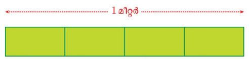
Figure fig_ch05_p055_02 (Page 55)
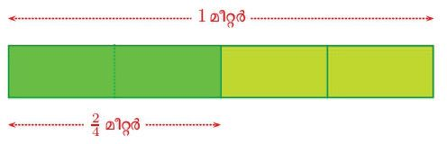
Figure fig_ch05_p055_03 (Page 55)
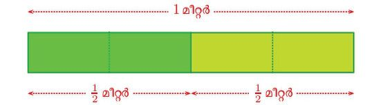
Figure fig_ch05_p055_04 (Page 55)
Part Number
Whether we take two of four equal parts or one of two equal parts,
what we get is half; that is to say, two fourth is the same as half. In the
language of math.
2 =1
4 2
Let’s consider another example.
If a one metre long ribbon is cut into four equal pieces, each part is 14
metre long:
1 metre
1
4 metre
1
4 metre
1
4 metre
1
4 metre
Suppose we take two parts together:
1 metre
2
4 metre
Since it is got by joining 2 of the 4 equal parts into which one metre is
cut, we can say it is 24 metre.
Since it is half of 1 metre, it may be better to say 12 metre (and easier
to understand also).
1 metre
Let’s have some more circles.
Do you remember this picture from the lesson, Lines and Circles?
We can mark six points on the circle in this:
Joining these points to the centre, we get a picture like this:
How many parts of the circle do we get?
Are they all of the same size? (If you are not convinced, Draw a picture
on a thick sheet of paper, cut out the pieces and check by stacking up
the pieces).
56
Page 57
Figure fig_ch05_p057_01 (Page 57)
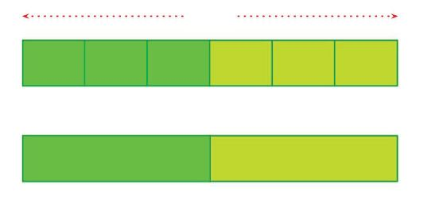
Figure fig_ch05_p057_02 (Page 57)
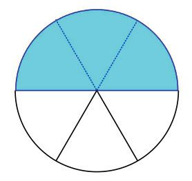
Figure fig_ch05_p057_03 (Page 57)
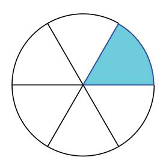
Figure fig_ch05_p057_04 (Page 57)
Part Number
We say each piece is one sixth of the circle, and write 16 of the circle.
1
6
In the above picture, to colour half the circle, how many more pieces
should we colour?
Out of the six equal parts, how many are coloured now? So, what part
of the circle can we say is coloured? How do we write it?
How do we write in the language of math that this is half the circle?
3 =1
6 2
Thus three sixth is also half.
We can also see this by cutting a one metre long ribbon into six equal
pieces and joining three of them together:
1 metre
How many pieces will we get if we fold and cut through the middle of
the four equal pieces of the circle?
What part of the circle we say each is?
And how do we write it?
How many such pieces must be joined together to get half the circle?
So what’s another way of saying half?
How do we write it?
Let’s make a table of the different forms of ‘half ’ we’ve seen:
Half
Parts cut
Parts taken
Said
Written
2
1
Half
4
2
Two fourths
1
2
2
4
6
8
Can’t you fill up the empty cells ?
58
Page 59
Figure fig_ch05_p059_01 (Page 59)
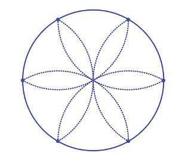
Figure fig_ch05_p059_02 (Page 59)
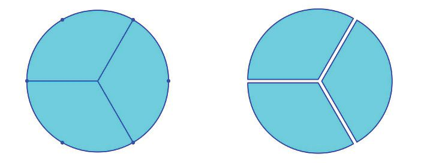
Figure fig_ch05_p059_03 (Page 59)
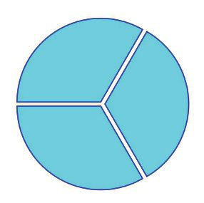
Figure fig_ch05_p059_04 (Page 59)
Part Number
Three parts
Don’t you remember marking six points on the circle to cut it into six
equal parts?
Draw a circle on a thick sheet of paper and mark these six points. Join
only the alternate points with the centre. First cut out the circle and then
cut along these lines.
Put these pieces one over another and check. Aren’t they all of the same
size?
Each piece is said to be one third of the circle; and we write 13 of the
circle:
If a 1 metre long ribbon is cut into three equal pieces, the length of each
is 13 metre.
1 metre
1
3 metre
1
3
metre
1
3 metre
If one litre of milk is shared by three, how much
will each get?
If we put together two of the three equal parts
into which a circle is cut, what part of the circle
would it make?
It’s two of the three equal parts of the circle
which has been cut into three.
It is said to be two thirds of the circle, written 32 of the circle.
2
3
2
3
1
3
Like this, let’s put together two of the three equal pieces into which a
one metre long ribbon is cut:
1 metre
Now let’s try these on your own:
1. Draw a square with each side 3 centimetres.
Mark off 1 centimeter from the left on the
top and bottom sides, and join them.
i.
What part of the square is the smaller
rectangle?
ii. And the larger?
iii. Colour the 13 part with red and the
2
3 part with green.
iv. Is there another way of dividing the square into 13 and 32
parts?
2. Draw a rectangle like this:
Colour 32 of it with green and, 13 with red.
Other parts
We’ve seen how to divide a circle into four equal parts:
And also that two of the pieces together make half the circle.
What if we put together three of the pieces?
Since it’s three of the four equal parts of the circle, we can say it’s three
fourths of the circle, and write 34 of the circle:
3
4
3
4
1
4
See the different lengths we get by putting together different number
of pieces got by dividing a one metre long ribbon into four equal parts:
1 metre
1
4 metre
1
4 metre
1
4 metre
1
4 metre
1 metre
1
2 metre
1
2 metre
1 metre
3
4 metre
62
1
4 metre
Page 63
Figure fig_ch05_p063_01 (Page 63)
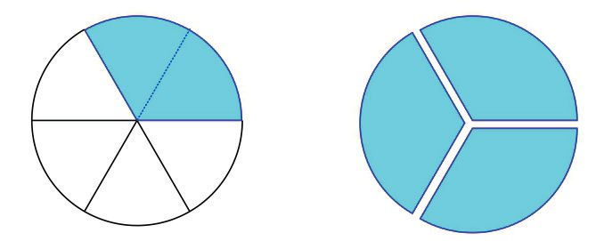
Figure fig_ch05_p063_02 (Page 63)
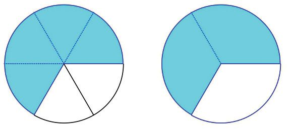
Figure fig_ch05_p063_03 (Page 63)
Part Number
One fourth is usually called a quarter and three fourths, three quarters.
So, the lengths in the picture above can be called quarter metre, half
metre and three quarters metre.
Another question: if three of the six equal parts into which a circle is
divided are coloured, then half the circle is coloured; what if we colour
only two parts?
Put on the top of this coloured part, one of the three equal pieces into
which the circle is divided and see:
Thus two sixths is the same as one third:
2 1
6 =3
Like this, colour four of these six parts and compare with two of the
three equal parts:
4 2
6 =3
We can also join different number of pieces of a one metre ribbon cut
into six pieces, and compare them with the pieces of another one metre
ribbon cut into three equal parts.
One of the two equal parts of a dosa is half a dosa.
If one litre of milk is used to fill three bottles of the same size,
then each bottle contains one third of a litre
If a one metre long ribbon is folded into three equal parts and
two of them are cut off together, the length of that piece is two
third of a metre
Fractions are used to talk about these parts in the language of math
1
1
2
3 litre
3 metre
2 dosa
Fraction in different forms may be the same part:
Cut a dosa into four equal pieces and take two pieces; or cut it
into two equal pieces and take one piece. In either case we have
half a dosa: 24 = 12
Fill six bottles of the same size with one litre of milk and take
two bottles; or fill three bottles of the same size with one litre
of milk and take one bottle. In either case we get one third of
a litre: 62 = 13 .
Fold a one metre long ribbon into six equal parts and cut off
four of these parts together; or fold a one metre long ribbon
into three equal parts and cut off two of these parts together.
In either case we get a piece, which is two third of a metre long:
4 2
6 =3.
Now let’s try these problems.
1. The pictures below show a circle divided into eight equal parts and
coloured two at a time:
Describe the coloured part of each in two different ways and write
both of them as fractions in the box below each picture.
2. The pictures below show circles divided into twelve equal parts with
some of the parts coloured:
Describe the coloured part of each in two different ways and write
both of them as fractions in the box below each picture
3. Draw a square and divide it as shown below:
Colour 18 of the square with red, 14 with green and 12 with blue.
66
Page 67
Figure fig_ch05_p067_01 (Page 67)
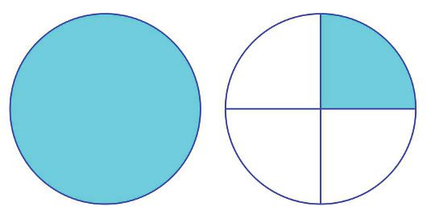
Figure fig_ch05_p067_02 (Page 67)
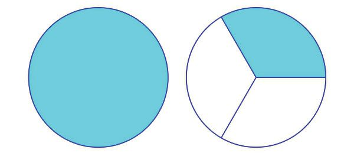
Figure fig_ch05_p067_03 (Page 67)
Part Number
i.
Is there any part left uncoloured?
ii. What part of the whole square is it?
iii. Write it as a fraction.
Whole and part
Haven’t you heard people saying one and a half litres of milk, one and a
quarter metres of cloth, two and a half kilograms of beans, and so on.
What do these mean?
Suppose one litre of milk is poured into a pot and then half a litre more.
How much does it contain now?
One litre and half a litre together make one and a half litres. We write
it as 1 12 litres.
If two litres and quarter of a litre are taken together, that make two and
a quarter litres, written 2 14 litres.
Look at these pictures:
What fraction of the second circle is coloured? So, we can say, 1 14 circles
are coloured. What about this picture?
One and one third is written 1 13 .
We can also have lengths like these. If a one metre long ribbon and half
of another one metre long ribbon are joined end to end, the length is
1
1 2 metres.
1 metre
1
2 metre
1
2
1
1 2 metre
1
2 metre
1 metre
In each of the pictures below, find how much is coloured and write
it as a fraction in the box on the right.